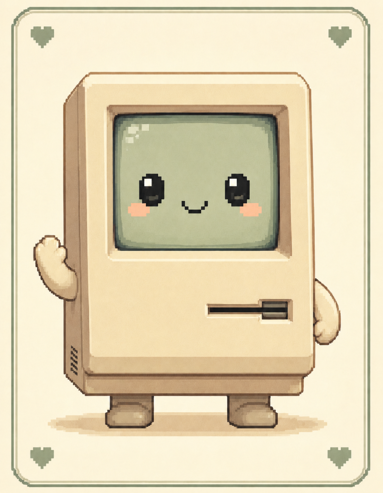

api-checker
★ LITTLE FRIEND ★

name:
click name to rename ✿

Start with your API key and endpoint, then send plain text or jump into vision, image generation, and tool calling tests.
Pick compatibility mode, enter Base URL, paste key if needed, then connect.
Send a normal chat prompt after Step 1 connects.
Choose a specialized API capability: a) vision, b) image generation, c) tool calling.